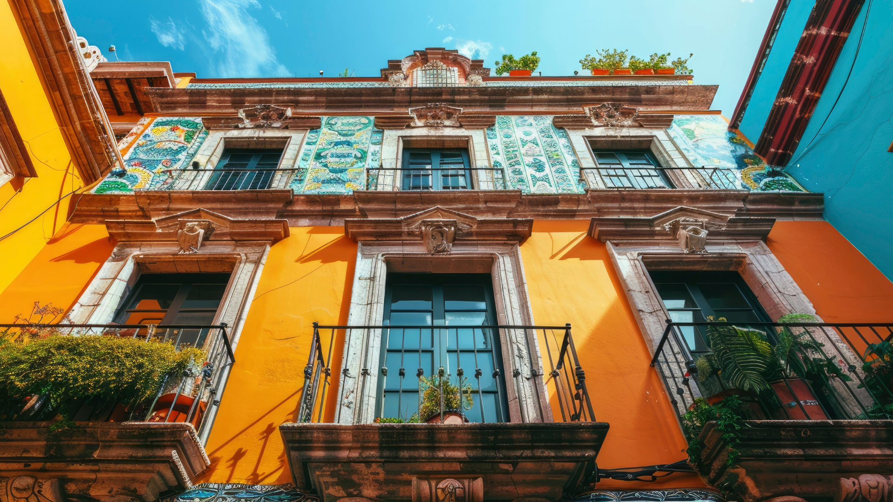

Palazzo Ducale.
Piazza San Marco, Venezia. Si trova sul lato orientale della piazza, vicino alla laguna.
By Freepik
#PonteDiRialto #PalazzoDucale #BasilicaSantaMariaDellaSalute #CaDoro
#PeggyGuggenheimCollection #TeatroLaFenice #CaRezzonico
#PalazzoGrassi
#AccademiaDiBelleArti #RivaDelVin #MercatoDiRialto #ChiesaSanGiacomoDiRialto
#PalazzoCornerDellaCaGrande
- Canal Grande: La principale via d'acqua di Venezia, noto per il suo percorso serpeggiante attraverso il cuore della città.
- Ponte di Rialto: Uno dei ponti più iconici e fotografati di Venezia, che attraversa il Canal Grande nel suo punto più stretto.
- Palazzo Ducale: Un magnifico palazzo gotico che una volta ospitava i duchi di Venezia, situato vicino a Piazza San Marco.
- Basilica di Santa Maria della Salute: Una grande basilica barocca costruita come offerta per la liberazione della città dalla peste.
- Peggy Guggenheim Collection: Uno dei palazzi più emblematici sul Canal Grande, noto per la sua facciata dorata e intricata architettura gotica.